Yoginara Pratama
Sitorus, S.Tr.Kom
Fullstack Web Developer & Software Engineer
Lulusan Sarjana Terapan Teknik Informatika (IPK 3,56) dari Universitas Logistik & Bisnis Internasional. Berpengalaman langsung merekayasa sistem enterprise berskala 116.000+ LoC di BUMD Tirta Raharja, menguasai modern backend Laravel 12 & Golang, serta tersertifikasi resmi BNSP Jaringan Komputer.
Profil Terverifikasi
Yoginara Pratama S.
Tentang Profil
Fondasi Akademik Kuat & Dedikasi Rekayasa Perangkat Lunak
Mengkombinasikan ketelitian logika matematika, penguasaan framework teruji, serta komitmen terhadap arsitektur kode yang bersih dan teruji otomatis.
Profil & Latar Belakang
Saya adalah Yoginara Pratama Sitorus, lahir di Pematangsiantar (22 Maret 2004) dan saat ini berdomisili di Bandung, Jawa Barat. Saya menuntaskan studi sarjana terapan di Universitas Logistik & Bisnis Internasional (ULBI) program studi D4 Teknik Informatika dengan raihan IPK 3,56 dan berhak menyandang gelar S.Tr.Kom.
Keahlian utama saya terletak pada perancangan arsitektur backend berskala tinggi (menggunakan Laravel dan Golang), optimasi query basis data relasional (SQL joins, indexing, pagination cerdas), pengamanan aplikasi berbasis standar OWASP Top 10, serta otomasi pengujian perangkat lunak menggunakan PHPUnit.
Selain pengembangan perangkat lunak, saya memiliki pemahaman infrastruktur dan transmisi data yang kokoh, dibuktikan dengan sertifikasi resmi BNSP Republik Indonesia sebagai Teknisi Muda Jaringan Komputer (SKKNI).
Struktur kode modular, pemisahan dependensi, dan dokumentasi berstandar industri.
Pengujian regresi nol, mitigasi IDOR, CSRF token, sanitasi XSS dan enkripsi data.
Biodata Ringkas
- Nama Lengkap Yoginara Pratama Sitorus
- Gelar Akademik S.Tr.Kom
- Pendidikan D4 Teknik Informatika
- Kampus ULBI Bandung
- Tahun Lulus 2026 (Fresh Graduate)
- IPK 3,56 / 4,00
- TTL Pematangsiantar, 22 Mar 2004
- Domisili Bandung, Jawa Barat
Bandung • Jakarta • Hybrid • Remote
Pengalaman Kerja Nyata
Kontribusi Nyata di Skala Enterprise BUMD
Membuktikan keandalan teknis pada sistem yang digunakan langsung dalam operasional instansi publik.
Fullstack Web Developer & Software Engineer Intern
Perumda Air Minum Tirta Raharja (Kabupaten Bandung / Pelayanan Cimahi)
Bertanggung jawab langsung dalam pemeliharaan dan rekayasa modul inti sistem Enterprise Governance, Risk, and Compliance (e-GRC) korporat yang menangani tata kelola risiko seluruh cabang pelayanan dan kantor pusat.
Pencapaian Teknis & Dampak Rekayasa:
-
Rekayasa Algoritma Risiko Residu Dinamis: Membangun fungsi matematis reaktif sisi-klien di
risk_analisisdetail.phpberbasis ISO 31000:2018 untuk mengeliminasi manipulasi data subjektif antar unit kerja. - Efisiensi Waktu Pelaporan 85%: Merefaktor dokumen cetak Kertas Kerja Profil Risiko dan query relasional, mempercepat kompilasi data risiko korporat dari ~10 hari menjadi hitungan detik (siap audit BPKP).
- Manajemen Skala Codebase Raksasa: Mengelola arsitektur modular pada basis kode 116.000+ LoC dengan 203 controller, 188 model, dan abstraksi dual-database (MySQL/MariaDB & Oracle DB OCI8).
-
Penyusunan Standar Tim & AI Assistant: Menulis berkas panduan
.github/copilot-instructions.mduntuk standardisasi pola arsitektur kode tim dan integrasi asisten kecerdasan buatan.
Galeri Portofolio Teknis
Sistem & Aplikasi yang Telah Dibangun
Mulai dari sistem enterprise berskala korporat, high-concurrency microservice berbasis Golang, hingga riset deep learning dan sistem IoT.
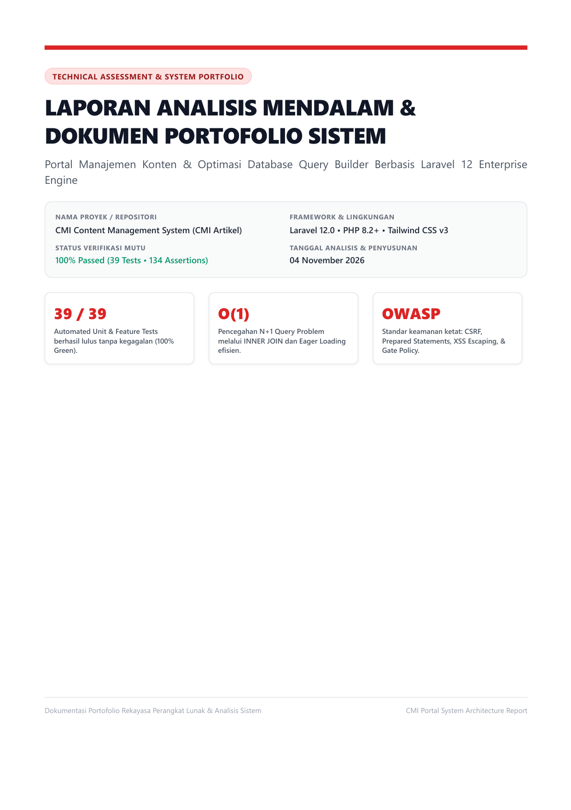
CMI Portal & Query Optimization
Sistem manajemen konten terisolasi dengan optimasi database Query Builder INNER JOIN, pagination terkontrol (memory < 8MB), mitigasi OWASP Top 10, dan 39 automated feature tests.
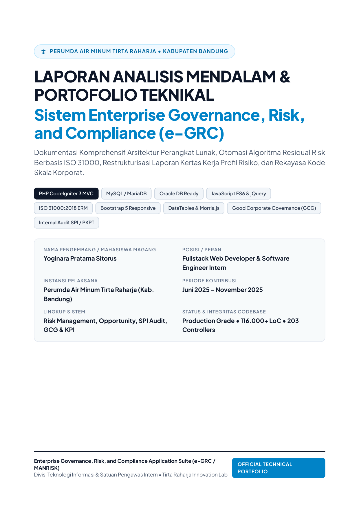
Sistem Enterprise e-GRC Tirta Raharja
Platform Enterprise Governance, Risk, and Compliance berskala korporat dengan algoritma risiko residu ISO 31000:2018, modul audit SPI, dan pemangkasan waktu laporan 85%.
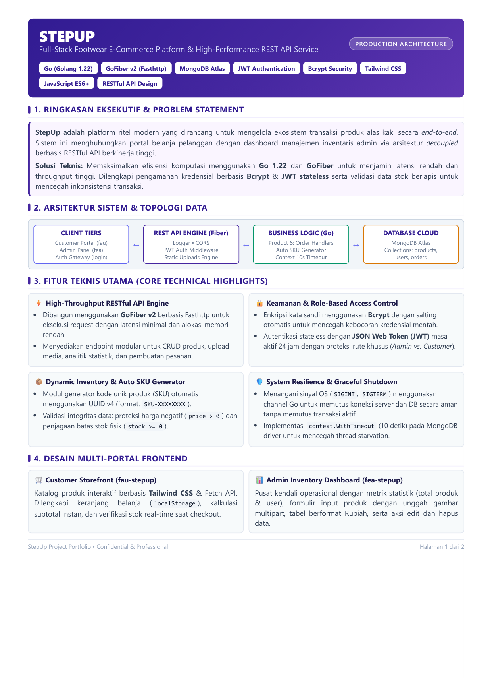
StepUp E-Commerce & REST API
Layanan API berperforma tinggi untuk katalog dan transaksi e-commerce alas kaki. Ditenagai GoFiber v2 berkecepatan tinggi, otentikasi JWT terenkripsi, dan basis data cloud MongoDB Atlas.
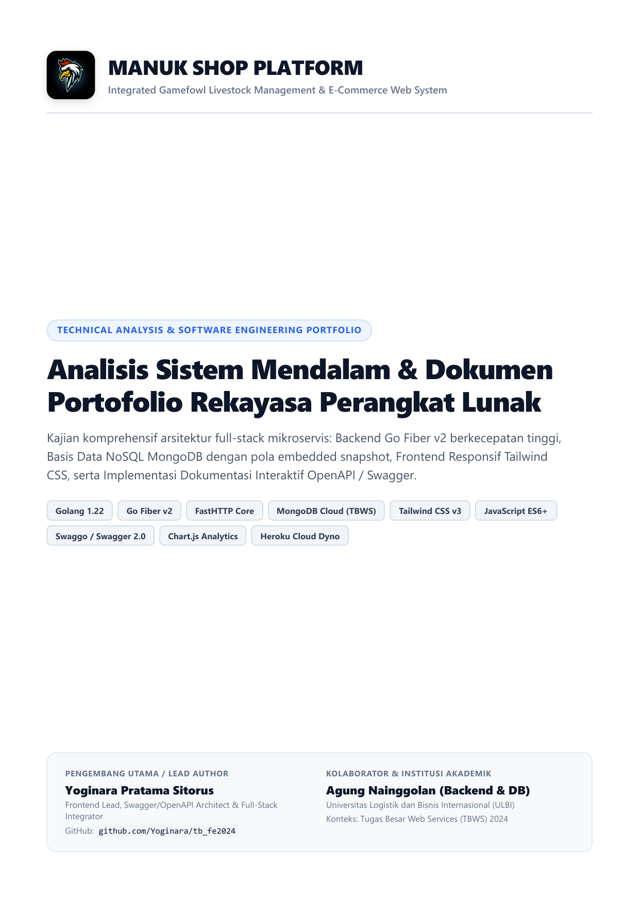
ManukShop Management & E-Commerce
Sistem manajemen peternakan dan transaksi komoditas unggas dengan dokumentasi OpenAPI/Swagger interaktif, pola embedded snapshot NoSQL MongoDB, dan arsitektur responsif Tailwind CSS.
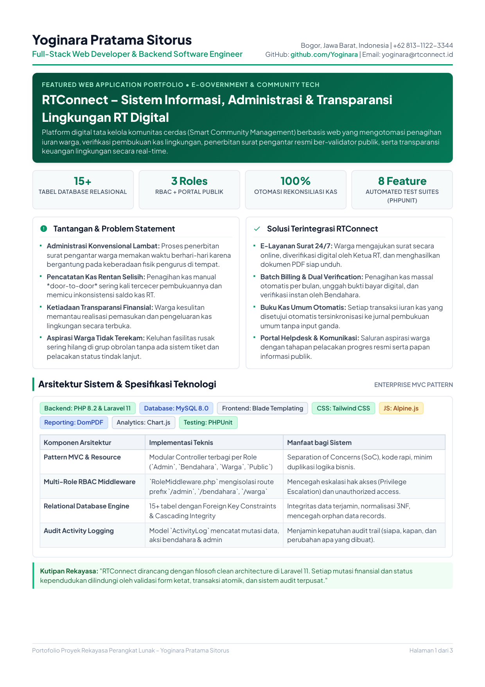
RTConnect — Administrasi Digital RT
Platform tata kelola lingkungan cerdas (Smart Community Management) yang mengotomasi penagihan iuran warga, verifikasi kas real-time, dan surat pengantar resmi ber-validator publik.
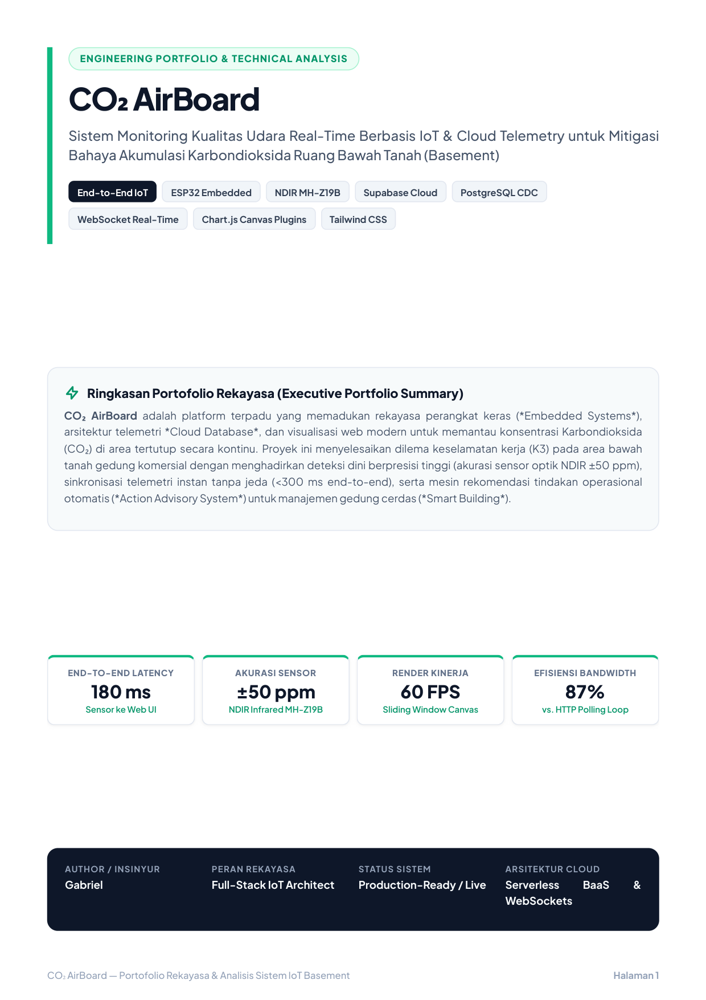
CO2 AirBoard — Sistem Telemetri Kualitas Udara
Solusi hardware-software pemantauan konsentrasi gas CO2 dan parameter lingkungan secara real-time melalui dashboard visualisasi interaktif dan ambang batas peringatan otomatis.
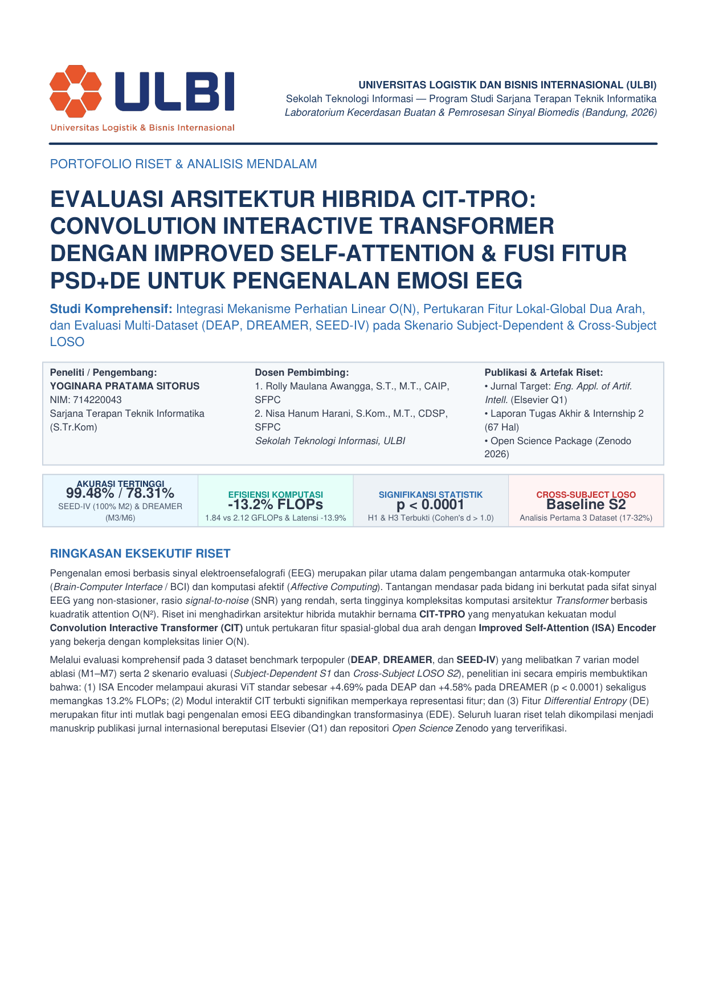
CIT-TPRO: Convolution Interactive Transformer
Riset arsitektur model hibrida Convolutional Transformer dengan Linear Self-Attention O(N) dan fusi fitur PSD+DE untuk klasifikasi sinyal gelombang otak (EEG) pada dataset benchmark internasional.
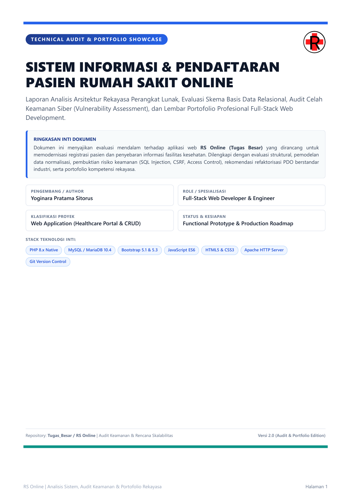
Sistem Manajemen Rumah Sakit Online
Sistem informasi antrean pasien, rekam medis ringkas, dan jadwal operasional poliklinik terintegrasi untuk memperlancar proses administrasi pelayanan kesehatan.
UD Abang Adik & Zero-Cost Architecture
Implementasi arsitektur katalog produk berbiaya $0 (zero-cost infrastructure) dengan mekanisme fallback toleran terhadap kegagalan dan latensi respons super cepat.
Lisensi & Sertifikasi Resmi
Standar Kompetensi Nasional & Internasional
Pengakuan resmi atas keahlian teknis melalui Badan Nasional Sertifikasi Profesi (BNSP) berstandar SKKNI serta sertifikasi industri global.
Teknisi Muda Jaringan Komputer
First-Level Computer Network Technician
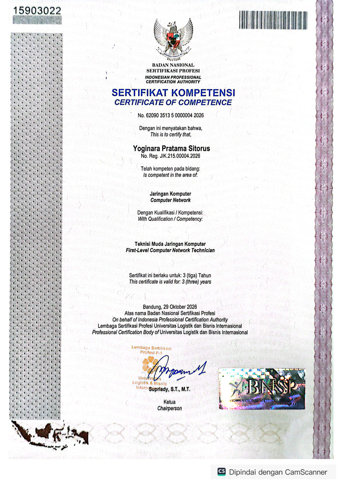
Perbesar PDF ↗7 Unit Kompetensi Standar SKKNI:
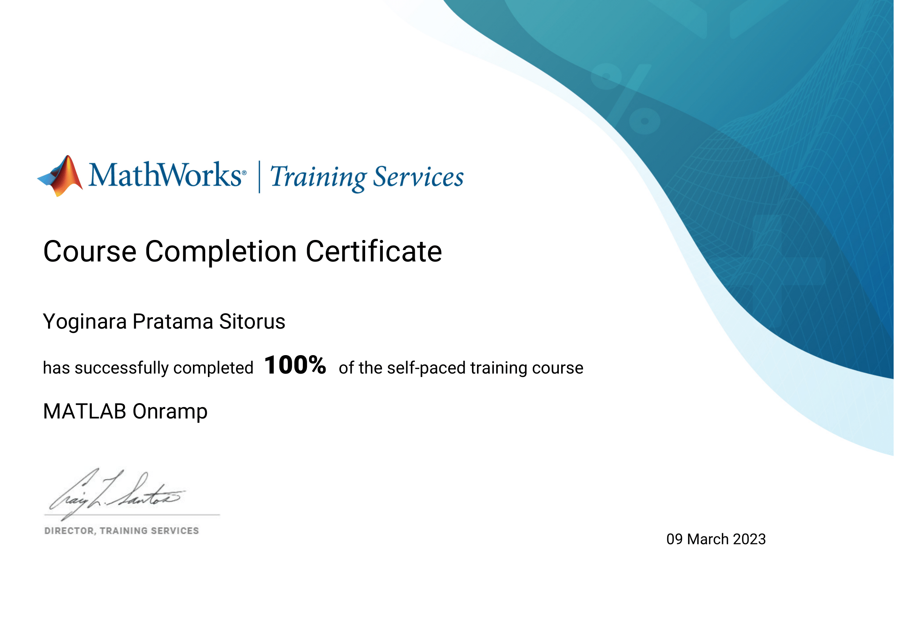
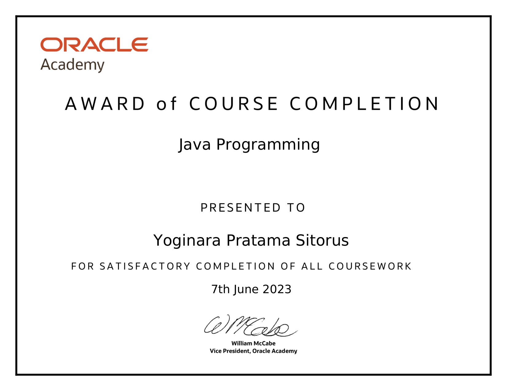
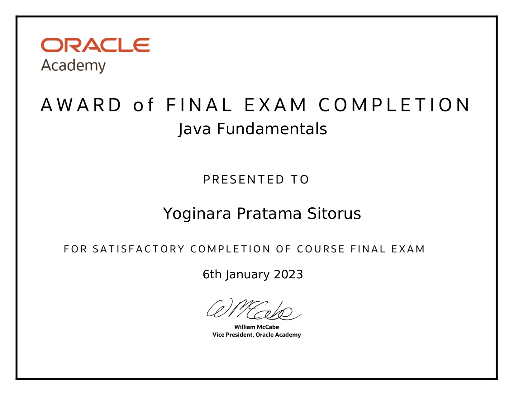
Matriks Keahlian Teknis
Tech Stack & Spesialisasi Rekayasa
Teknologi yang dikuasai secara mendalam untuk merancang aplikasi siap pakai, cepat, dan aman.
Backend Engineering
- PHP 8.2+ (Expert)
- Laravel 12.x Engine
- CodeIgniter 3 MVC
- Golang 1.22 & GoFiber
- RESTful API Design
Database & Queries
- MySQL & MariaDB
- Oracle Database (OCI8)
- MongoDB Atlas (NoSQL)
- INNER JOIN & Index Optimization
- 3NF Database Normalization
Frontend & UI/UX
- Tailwind CSS v3
- Bootstrap 5 Responsive
- JavaScript ES6+ & jQuery
- Blade Templating Engine
- DataTables & Charts.js
Security & Networking
- OWASP Top 10 Hardening
- PHPUnit 11 (TDD/Automated)
- BNSP Computer Networking
- Git & GitHub Workflow
- Swagger & Postman API Testing
Mari Berkolaborasi
Siap Berkontribusi untuk Tim & Perusahaan Anda
Terbuka untuk posisi Full-time Software Engineer, Backend/Fullstack Developer, maupun proyek strategis.
+62 813-6064-0668
Respons Cepat (Chat & Panggilan)
yoginara2004@gmail.com
Surat Lamaran & Diskusi Proyek
github.com/Yoginara
Kode Sumber & Commit History
Kirim Pesan Langsung
Isi formulir di bawah ini untuk terhubung langsung ke WhatsApp saya secara otomatis: